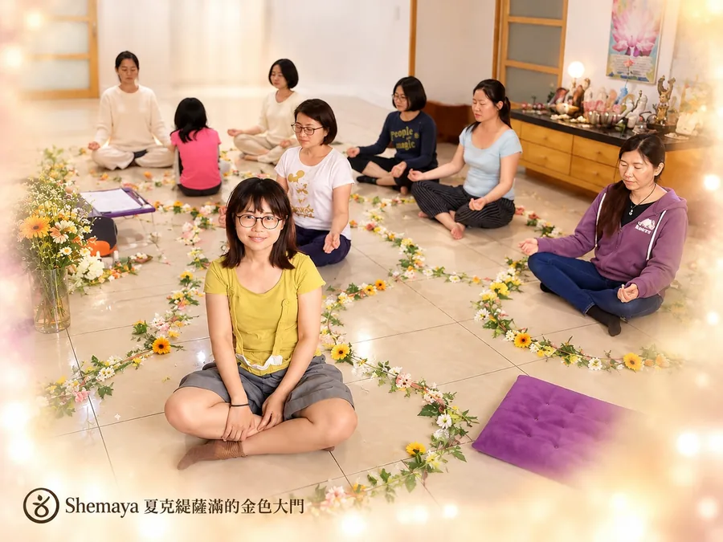
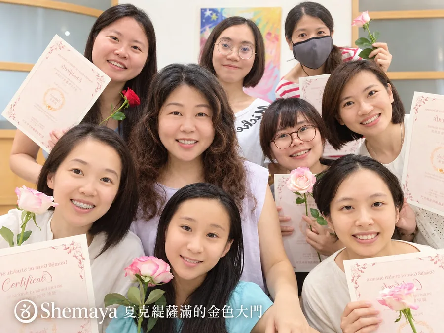
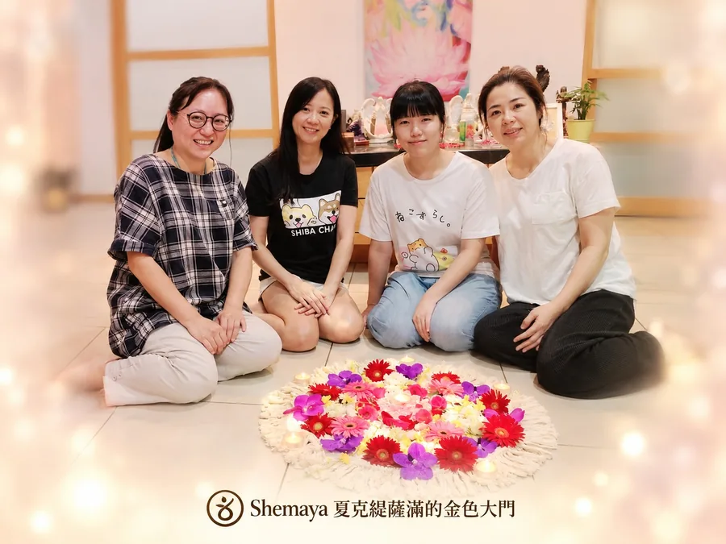
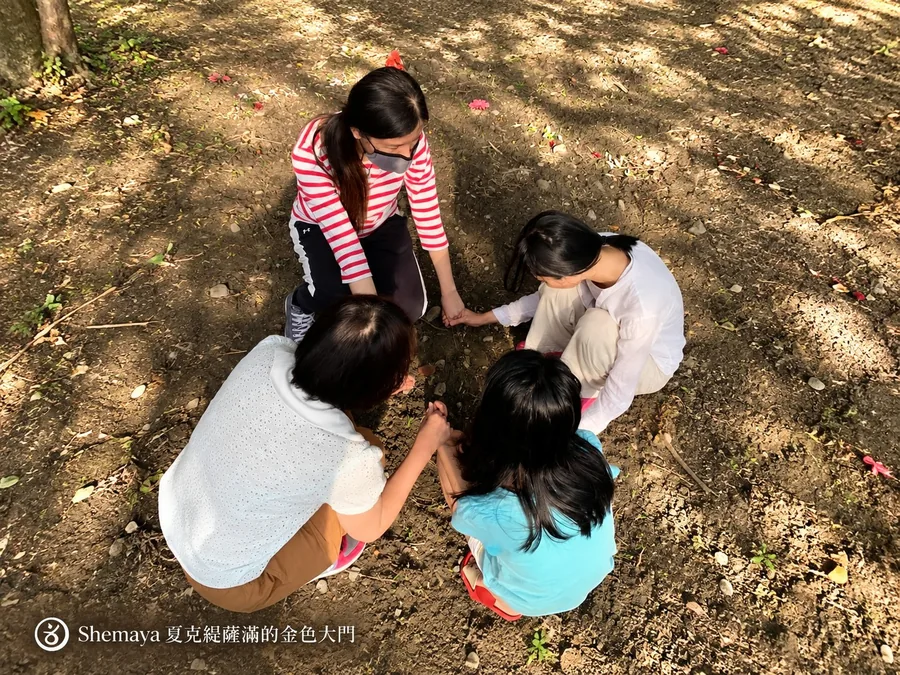
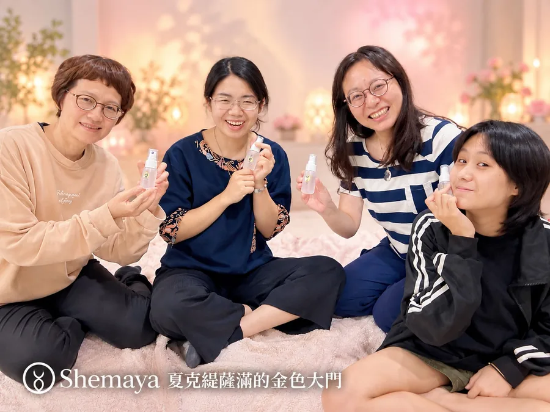
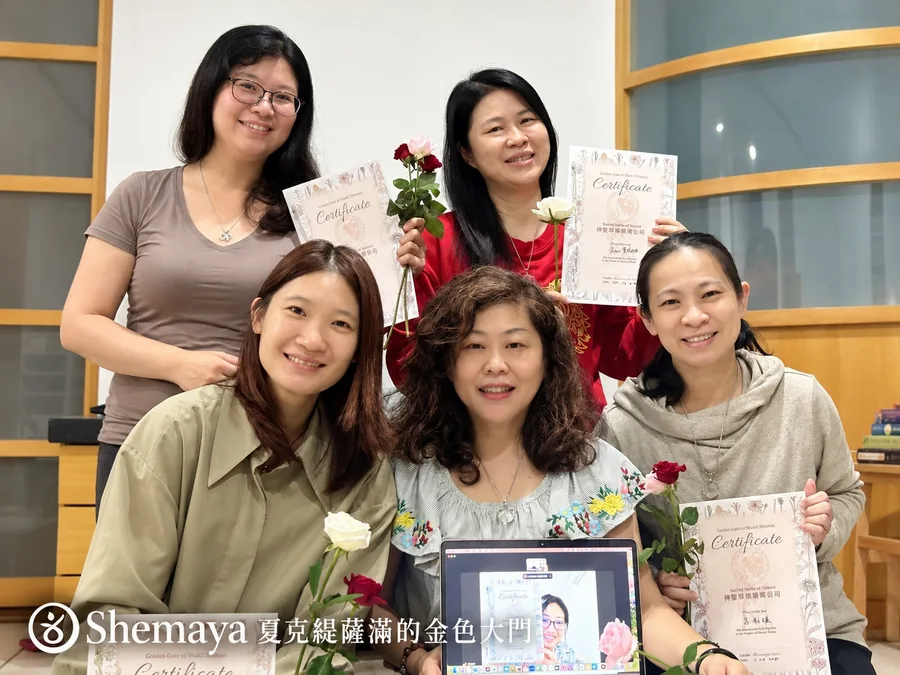
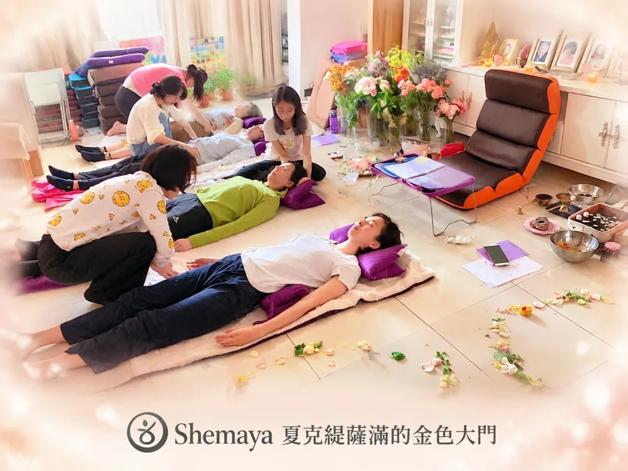

學員回饋







＊學員說，課程內容遠遠超過老師文宣所寫的，簡直太驚艷啦！（桃園Ｓ）
＊終於得到愛的踏實感
「課程第一天就做了大量療癒，心輪是這次我被修復最多的脈輪。長期以來，我一直感到左胸腔很空洞，好像少了什麼而有很深的匱乏感。Shemaya 老師教我們用自天狼星金光泥土，逐ㄧ修補心輪裂縫，奇蹟發生了！竟然我體會到一直以來所渴望的愛的踏實感。很感謝這門課帶給我滿滿的愛，也讓我經驗自己是完整合一的，不再與自己的靈魂失聯。在迎回力量動物並和衪們對話後，我左眼突然腫起來。老師說那是古老業力在釋放，感謝有老師帶著我們做許多業力釋放及相關療癒，我在交換療癒後，左眼舒緩了很多。感謝耶穌及天狼星星光，讓我釋放久遠前和靈性動物們分離的傷痛。」（台北Ｐ）
＊穿越古老記憶與陰影轉化，重回神聖藥草祭司的位置
我歷經半年失眠之苦，中醫也好西醫也罷，能吃的各種保健食品，後來加上運動等等，幾乎都嘗試過，狀況依然沒有改善。直到某一天，偶然看到一句話「雙魚座的病症，要用雙魚座的方式治療」，想想也是。無論是西醫的吃藥或中醫針灸，再怎樣也都屬於肉體層面的治療，總有它的侷限性，或許從心靈出發會有不一樣視野，於是在朋友鼓勵下，我踏上身心靈學習的道路。
得知Shemaya 老師要開藥草課程時，我不理解內容，但心卻莫名被吸引。我擔心會跟不上，故在開課前以脈輪花卡作了三位一體牌陣，眼前紫花花一片，了解到這門訓練對我最大的禮物，應是修復我與天堂間愛的斷裂吧。
在一次次的點化及夥伴們互相療癒中，清理出好多被我堆積在脈輪的古老陰影，那些舊記憶像跑馬燈閃過，部族戰爭、親人被殺、一把摧毀森林的大火⋯，在星空的碎片裡迎回靈性動物。還有失落很久的女性面向。連結到自己的靈魂，以及被耶穌的愛觸動，熾熱的光似電流穿透我，讓我久久不能自己，也感受到臣服於神的愛，在更高意旨中迎來更完整自己的美好經驗。
Shemaya老師教我們，將光能量藥草化為有形的介質，過程非常有趣，我也發現自己對植物香氣有直覺天賦。我的天堂藥草是紫色小花，可磨成粉敷在身體或口服，可以為人們切開、拉出被封印的過往陰影，藉著天堂的療癒之光重新經驗並穿越它。我的天堂藥草讓人在天堂的光支持下與自己和解、和他人和解，這株光藥是帶有「寬恕」療癒品質的天賜禮物。
很開心我能藉由神聖自然藥草祭司這門課程，發掘出自己遺忘的面向及能力，更感動的在掘過程中，能順利取回這份潛能。神聖自然藥草祭司課程所帶來，是那麼超乎預期，謝謝神，讓我有機會接觸並相信這一切，更謝謝Shemaya老師讓這一切成真。（台北NH）
＊這門課有很多靈魂旅程的深度療癒。我拿到如同光瀑布般的天堂藥草，針對身體、光體缺乏光的部位，注入大量的光，並將儲存的黑暗物質自腳底瀉出。為同學們施作得到的回饋是「很大的光柱」、「瀑布般的光一直倒進來」「 太讚啦」這株神聖藥草能量非常強大，老師提醒一次別作太多。在經驗過所有人的天堂神聖藥草療癒後，發現自己的光更擴展，人也更明亮了。每次使用天堂藥草後，我都深深感謝藥草女神賜予我那麼棒的天堂禮物。（台北ＮＳ）
＊療癒不被愛的傷痛
常感莫名的空虛跟失落，覺得自己沒價值，潛意識總想透過為他人服務去證明自己。課程某段療癒練習中，老師悄悄走到我後心輪，為我塗上基督白火能量油。開始我覺得暖暖的，身體有好多的愛好舒服好開心，突然某個情緒浮現：「為什麼我從沒得到過這種愛？」我開始啜泣，靜靜坐起，我突然無法抑制的大哭起來。過去的不被愛與失落一一浮現，「為什麼擁有幸福快樂的家庭如此困難？」悲傷的情緒讓我不停哭，像是要把靈魂裡藏的生生世世委屈都哭出來。老師以愛來陪伴、支持我處理內心陰影。神聖藥草祭司們也以愛來祈禱、療癒眼前需幫助的我，就如同過去多世我們所做的一樣。
老師帶回溯讓我回到耶穌時代，我是跟隨師父學藥草的少女，很快樂的我抱著一隻雞要去市集換東西。聽到耶穌要來了好高興，但之後場景，卻變成好像我做錯事，很慚愧不敢面對耶穌。當耶穌出現我痛哭，跪著問「你還會愛我嗎？」最後我也把這個做錯的枷鎖交出去了。
老師說，藥草祭司們個人的神聖藥草是來自神的禮物，由於黃金世紀人們的需要才被允許帶到地球，而這些主要也療癒我們自身的陰影，在為他人療癒時，同時也療癒自己。某場療癒練習中，我進入歐洲黑死病流行期，當時在路邊救治快死的人們但沒救成，造成有醫術的我非常自責絕望。老師告訴我，要學習臣服，要認清即使醫術再好，也敵不了業力。課程中，有不少過去不平靜的陰影浮出，謝謝Shemaya老師協助，讓我順利穿越釋放陰影。（台北Ｂ）
＊修復累世與神分離的創傷
第一天最後階段，老師正要講解植物知識時，由於能量還在流動作用，我的情緒被帶出來崩潰大哭。哭得撕心裂肺、肝腸寸斷，從來沒這麼崩潰過的我，說不上來為何如此崩潰，只知有一股好深好深的哀傷，要從哀傷火山噴發出來，眼淚就像岩漿一樣滾燙，哀傷火山的岩漿好燙，我的心好痛好痛，為什麼光要撤退？為什麼狼要和我分離？為什麼耶穌不愛我了？為什麼愛都離我遠去了？我好孤單，我苦苦守護著知識守得好苦，為什麼沒有人來救我？大家都去那兒了？為什麼留下我孤軍奮鬥？為什麼沒有人理解我？為什麼沒有人守護我？悲傷火山爆發出我累生累世的悲傷，爆發成一塊塊悲傷石頭和碎片，隨著我的鼻涕和眼淚流出來。
老師帶著大家為我療癒，一開始我像個黑洞，似乎再多的愛都不夠填。崩潰的情緒不斷從眼淚流出，甚至還哭出了聲音。慢慢的我感覺到好多溫暖的手接住了我的悲傷，這次我沒有不斷的往黑暗掉下去，終於有人接住我了！悲傷火山慢慢冷卻下來了，這次，耶穌的愛來了！祂帶著藥草祭司們用愛編織成粉紅光的大網，把我接起來。經過這次的累世情緒大釋放，我彷彿重生般的活起來。（屏東Ｎ）